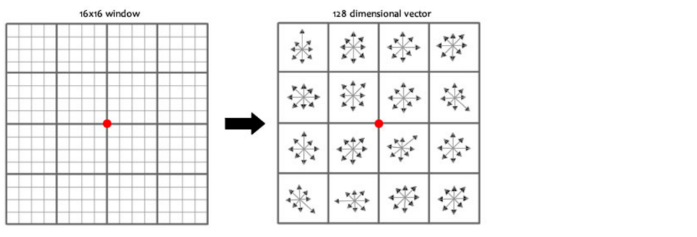

为什么有些点适合匹配
大块白墙平移几个像素，局部几乎不变；直线边缘沿着线移动，也很难确定新位置；角点附近向各方向移动，图案都明显变化。特征检测先找这种可定位的位置，再用描述子表达周围结构，最后比较不同图片的描述子。检测到很多点不代表匹配一定正确，关键在于这些点能否在视角、尺度和亮度变化后重复出现。
Harris 从局部变化推导角点
把图像窗口平移 $(u,v)$，用加权平方差衡量变化：
$$ E(u,v)=\sum_{x,y}w(x,y)[I(x+u,y+v)-I(x,y)]^2. $$
小位移下用一阶近似 $I(x+u,y+v)-I(x,y)\approx I_xu+I_yv$，整理得 $E(u,v)\approx [u,v]M[u,v]^T$，其中
$$ M=\sum w\begin{bmatrix}I_x^2&I_xI_y\\I_xI_y&I_y^2\end{bmatrix}. $$
两个特征值都小，窗口基本平坦；一个大一个小，沿一个方向变化强，通常是边缘；两个都大，两个方向都有明显变化，才像角点。Harris 用 $R=\det M-k(\operatorname{trace}M)^2$ 避免逐点显式计算特征值。这里的 $M$ 是局部梯度统计矩阵，并不是将像素位置变换到另一幅图的单应矩阵。
import cv2 import numpy as np gray32 = gray.astype(np.float32) response = cv2.cornerHarris(gray32, blockSize=2, ksize=3, k=0.04) marked = image.copy() if response.max() > 0: marked[response > 0.01 * response.max()] = (0, 0, 255)
这是整理后的教学写法。blockSize 控制统计邻域，ksize 控制 Sobel 导数窗口，k 调整角点响应中的惩罚。红色区域是超过相对阈值的像素集合，不一定每块只剩一个定位点；若需要离散角点，要进一步做局部最大值筛选。显式转换浮点类型有助于检查后续梯度计算的数值。
SIFT 如何处理尺度和旋转
同一个物体在图中放大，固定窗口看到的结构就不同。SIFT 先建立高斯尺度空间 $L(x,y,\sigma)=G(\sigma)*I$，相邻模糊层相减得到 DoG。在同层 8 个邻点及上下两层 18 个邻点之间比较，寻找共 26 邻域中的极大或极小值，再细化位置，过滤低对比度和不稳定边缘响应。
尺度定位之后，算法统计局部梯度方向，给关键点分配主方向。描述区域按主方向对齐，就能在一定范围内减弱旋转影响。教材用 2×2 小块说明直方图组合，完整 SIFT 则使用 4×4 个空间单元，每个单元统计 8 个方向，形成 $4\times4\times8=128$ 维描述子。
一个关键点有位置、尺度和方向；一个描述子是一行 128 个数。若找到 $N$ 个关键点，描述矩阵通常为 (N,128)。这个 128 不是类别数，也不是原图像素宽度。关键点多主方向时可产生位置、尺度相同而方向不同的描述。
sift = cv2.SIFT_create() keypoints, descriptors = sift.detectAndCompute(gray, None) if descriptors is None: raise ValueError('图像中没有可用的 SIFT 描述子')
这段按 OpenCV 4 的接口整理。旧示例使用 cv2.xfeatures2d.SIFT_create()，阅读时保留其算法思想，移植时核对安装环境实际接口。OpenCV SIFT 教程

描述子相似还要经过两次筛选
暴力匹配逐一比较候选描述子。SIFT 使用浮点描述子，通常比较欧氏距离；二进制描述子则应根据编码方式选相应距离，不能只复制匹配器参数。crossCheck=True 的含义是 A 的最近邻为 B，同时 B 的最近邻也必须是 A，它强调双向一致。
另一种筛选是最近邻与次近邻比值测试：若第一名与第二名几乎同样好，说明这块纹理没有区分力。教材阈值 0.75 是示例选择，不等于 75% 正确率。
matcher = cv2.BFMatcher(cv2.NORM_L2) candidates = matcher.knnMatch(desc_a, desc_b, k=2) good = [] for pair in candidates: if len(pair) == 2: best, second = pair if best.distance < 0.75 * second.distance: good.append(best)
代码添加了候选数量检查，因为并非每个查询都能找到两个邻居。queryIdx 指向第一幅图的描述子，trainIdx 指向第二幅图，必须与传入匹配器的顺序一致。画连线时若把索引交换，可能得到看似随机的线，却仍不报语法错误。
RANSAC 用几何关系排除假匹配
重复窗户、砖块等纹理会产生外观相似但位置错误的匹配。RANSAC 随机选少量点拟合几何模型，再统计有多少匹配符合模型；经过多次试验，保留支持度较高的模型。单应矩阵为 3×3，齐次坐标下满足 $s[x',y',1]^T=H[x,y,1]^T$。至少需要四对非退化对应点；更多点给鲁棒估计提供冗余。
几何模型也有适用条件。平面物体或近似纯旋转拍摄常适合用单应性，不同深度产生明显视差时，一张矩阵未必能对齐所有区域。RANSAC 只能在既定模型下过滤异常，不能使不适用的模型自动正确。
练习
- 描述子形状
(320,128)表示什么？ - 比值阈值从 0.75 改为 0.5，通常保留的匹配如何变化？
- 为什么 20 个外观匹配也可能不能拼接图像？
- 共 320 个局部描述子，每个 128 维；对应关键点的数量应相同。
- 更严格，通常保留更少但区分性更强的匹配，过严也可能导致几何估计点数不足。
- 匹配可能位置错误、集中在狭小区域或退化成近似直线；场景也可能有严重视差，需要检查空间分布、内点及几何模型。